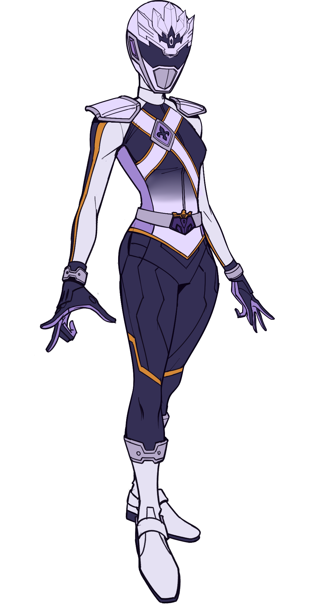

That someone so introverted and borderline antisocial was chosen to be one of the Starlite 7th is a clear indicator that there was no human power involved in making the choice. As the Starlit Mikado, Jí Lián fights with an unmatched efficiency. This is so she doesn't have to put out any more effort than she absolutely has to. The Starlit Mikado fights with the Monarch Axes, a pair of hand hatchets for throwing that can be connected and used as a boomerang.